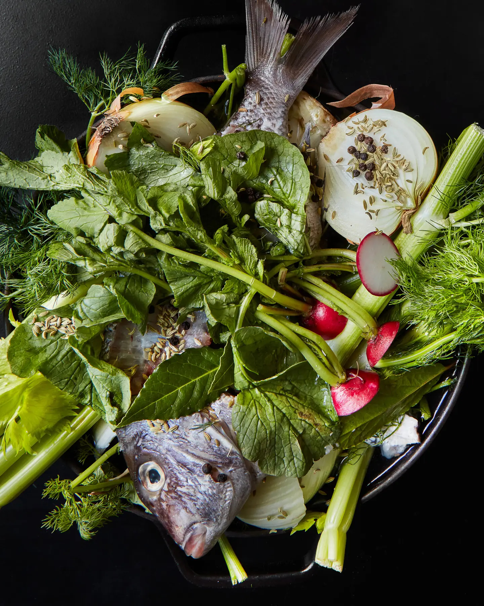

How to Make Fish Stock
This basic skill sets up cooks to turn scraps into anything from crystal clear poaching liquid to a deep, dark flavor bomb base.
Mild, versatile chicken stock acts as the kitchen's workhorse, but beef stock steps in for the heavy-duty work. With plenty of flavors to sip on
its own as a broth, plus the body to support gravies and sauces, beef stock is absolutely worth the time it takes to make. At The Ruby Brink on Washington
State's Vashon Island, butcher and co-owner Lauren Garaventa uses it in tandem with chicken broth as the base of the restaurant's noodle soups, a method she picked up from her Mexican grandmother.

What you need
- Heavy-bottomed stainless steel pot
- 60-120 ml ladle
- Small bowl
- Conical fine mesh strainer
- Fish bones or scraps
- Assorted vegetables (celery, radish tops, onion, fennel, even tomato for darker stocks)
- Aromatics (peppercorns, bay leaf)
- Wine or liquor
What to do
Step 1: Clean and dry your fish scraps, and (optionally) roast them.
Ragsdale notes that many people wash their bones and fish scraps, but to preserve the maximum amount of flavor, he prefers to simply wipe out any blood or bits with
paper towels, pat them dry, and then let them dry out overnight in the fridge. For a deeper, darker fish stock, Ragsdale also recommends roasting the bones before using ––
simply put in the oven at 450 degrees Fahrenheit with salt and pepper for 15-20 minutes, then deglaze the pan with whatever wine or liquor you plan to use for the stock.
Step 2: Collect the ingredients and place in stockpot.
In a heavy-bottomed stainless steel or Le Creuset-style pot, add the fish bones and scraps, plus the fond and deglazing liquid if you roasted them.
Then add your selected liquor, aromatics (Ragsdale recommends bay leaf and peppercorn), and water. For a lighter stock, Ragsdale also now adds whatever vegetables he plans to use
–– stuff like onion, celery, radish tops, and fennel. For a darker stock with roasted salmon bones, he waits until halfway through the simmer process in step three, then adds his vegetables,
and often adds tomatoes and even tomato paste to bolster the flavor.
Step 3: Simmer the stock to extract flavor from fish.
For the lighter, classic clear stock, bring the pot to a simmer and then cut the heat down for a simmer that Ragsdale describes as having "barely Champagne-type bubbles," and keep it there for about 30 minutes.
As the stock simmers, use a 2- to 4-ounce ladle to skim the top, dropping it into a side bowl. For the darker style of stock, start by bringing it all the way up to a boil, then turn down to a full simmer and leave
it there for a full hour. With this version, you don’t need to skim, but do add your vegetables halfway through, as described in step two.
Step 4: Strain and season stock.
When the stock is finished cooking, strain it through a fine mesh strainer. Ragsdale uses the conical type, but says anything super fine works, as long as it gets all the small bits out.
Then he seasons the stock, keeping it simple. "I like to have room to play with it, later," he explains. For lighter stock, that means just salt, a touch of sugar, and some mushroom powder for
umami flavor. For a darker stock, he often uses fish sauce or soy sauce.